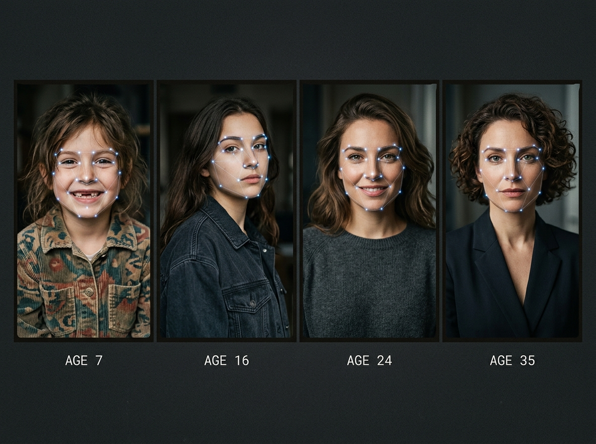

Media Chronicle: Private Family Photo Indexer
Media Chronicle is a native Windows app that indexes family photo libraries from external drives—100% offline and private. No cloud uploads, no subscriptions.
8-Week MVP Scope & Credibility
Our focused engineering timeline delivers a standalone Windows executable with in-place drive scanning (no file copying), fast preview streaming, metadata search, local face detection/grouping, and JSON/CSV export. Multimodal vector search, Ollama VLM integration, and narrative timelines are deferred to v2.
Standalone Windows Executable
Packaged as a lightweight, single-click Windows .exe. Runs out of the box with zero complex Python environments, Docker containers, or command-line dependencies for end users.
In-Place External Drive Scanning
Scans family photo libraries directly on external USB hard drives, SSDs, and SD cards. Zero duplicate file copying, protecting your PC's internal drive from storage exhaustion.
Fast Preview Streaming
Smooth, stutter-free masonry thumbnail pipeline and instant lightbox viewing. High-performance caching handles massive collections of 100,000+ photos without memory leaks.
Instant Metadata Search
Search effortlessly across EXIF capture timestamps, date ranges, camera hardware, image resolutions, location tags, and preexisting folder hierarchies in real time.
Local Face Detection & Grouping
On-device biometric face detection bounding boxes cluster recurring faces into organized family albums without sending a single pixel over the network.
Portable JSON & CSV Export
Unrestricted data sovereignty. Export your indexed catalog, EXIF metadata, face clusters, and media path registries into portable JSON or CSV formats with a single click.
Why Pay $79?
iCloud and Google Photos cost $120–$240 annually while indexing personal memories on corporate servers. Media Chronicle costs a one-time $79, replacing perpetual cloud fees with permanent software ownership and airtight privacy.
iCloud & Google Photos
Perpetual monthly bills that compound indefinitely
-
✕
$1,200 to $2,400 over a decade
Storage costs increase as your family collection grows over time.
-
✕
Memories on Corporate Servers
Photos and biometrics are parsed, indexed, and monetized on cloud infrastructure.
-
✕
Cloud Lock-In & Bandwidth Throttles
Exporting tens of thousands of original RAW files and photos takes weeks.
-
✕
Subscription Cancellation Risk
Stop paying the monthly bill, and access to your high-res library is locked.
Media Chronicle
Permanent desktop license • Zero recurring subscriptions
-
✓
100% Offline & Private
Indexes directly from external drives without cloud uploads or telemetry.
-
✓
In-Place Drive Scanning (No File Copying)
Saves internal drive space by cataloging files directly on your external HDDs & SSDs.
-
✓
Local Face Detection & Grouping
Fast on-device biometric clustering and instant metadata search.
-
✓
Standalone Native Windows Executable
Clean single executable with fast preview streaming and JSON/CSV export.
Product Roadmap: v1 MVP & v2 Vision
Multimodal vector search, Ollama VLM integration, and narrative timelines are deferred to v2 to guarantee an on-time, rock-solid 8-week MVP delivery.
v1: 8-Week MVP Scope
Active EngineeringDirect recursive scanning of NTFS/exFAT drives without file copying or disk duplication.
Instant masonry grid rendering and high-res lightbox caching for 100,000+ photo archives.
Real-time filtering by capture timestamp, year/month, camera model, and folder structure.
On-device YOLO bounding boxes clustering matching faces into private family albums.
Complete data export of catalog entries, timestamps, and face coordinates with zero lock-in.
v2: Future Intelligence Roadmap
Deferred to v2Natural language search queries powered by on-device CLIP embeddings (e.g. "kids opening gifts on Christmas").
Automated multimodal scene captions, contextual tags, and automated narrative generation via Ollama.
Chronological memory albums with ambient cover cards, narrative journals, and milestone books.
On-device active learning Softmax perceptron to fine-tune unique family face decision boundaries.
Air-gapped peer-to-peer sync between Windows PCs and laptops across local home Wi-Fi.
Test the MVP Engine & v2 Research Labs
Experience our local biometric grouping engine (v1 MVP) alongside interactive previews of our v2 machine learning research pipeline (SGD neural retrainer, 2D latent vector map, and offline bypass benchmark).
SingleLayerPerceptron (SGD) Simulator
lib/features/gallery/providers/yolo_face_provider.dartMedia Chronicle does not rely on cloud APIs to learn new faces. It runs a mathematically sound Multi-Class Softmax Perceptron in pure Dart with real cross-entropy loss reduction and stochastic gradient descent backpropagation.
Chronological Age Timeline & Variants
lib/features/gallery/models/detected_face.dartFaces change significantly across human life stages. When an embedding distance exceeds the cosine threshold (>25.0 distance), Media Chronicle's conflict resolver intelligently links childhood and adulthood variants under one enrolled identity.

2D Embeddings Scatter Plot
yolo_embeddings_map.dart (CustomPainter)Media Chronicle projects 128-dimensional face embedding vectors down to interactive 2D coordinates. Clustered hulls represent enrolled individuals, while dashed lines trace chronological age progression through latent space.
Ollama VLM Offline Bypass
Milestone 8: Fast-Load & Offline BypassIn earlier builds, if the local Ollama VLM daemon wasn't running, media imports hung for 90 seconds before HTTP connection timeout. Milestone 8 introduced an ultra-fast socket health probe and heuristic fallback simulator.
Built for Performance, Designed for Memory
Every layer of Media Chronicle is architected with modern software design patterns, from Riverpod Clean Architecture to headless computer vision.
Twilight Ambient Design System
Frosted acrylic cards rendered via native BackdropFilter, neon cyan (#00F0FF) and rose pink (#F43F5E) ambient glow backdrops, and geometric Outfit typography produce an editorial high-tech aesthetic.
Memory Stories & Narrative Timelines
Transform flat camera rolls into meaningful personal memoirs. Chronological story albums pair high-res photography with rich text narratives, ambient cover cards, and real-time global search indexing.
YOLO Face & Active Learning Hub
Glowing neon cyan overlays highlight verified faces while rose pink bounds unidentified candidates. Labeling faces triggers pure Dart stochastic gradient descent backpropagation with instant database synchronization.
Modular Python YOLOv8 Pipeline
Complete standalone ML engineering tools driven by Astral uv. Includes CLI scripts for dataset scaffolding, YOLOv8 fine-tuning, Albumentations transforms, ONNX model simplification, and a 9-section Jupyter notebook.
Fast-Load & Offline Bypass
Never wait on cloud timeouts. The app detects absent Ollama VLM daemons in milliseconds, bypassing network hangs to import files in ~1.2s instead of 90s, while gracefully employing smart on-device fallbacks.
Direct PostgreSQL & SHA-256
High-throughput direct TCP socket synchronization to local PostgreSQL with programmatic SQL migration DDLs. Strict SHA-256 cryptographic hashing guarantees zero duplicate media ingestion.
Riverpod Clean Architecture & Tech Stack
Media Chronicle was refactored across 16 major milestones into a rigorous, feature-first Clean Architecture, completely eliminating legacy ChangeNotifiers in favor of code-generated Riverpod Notifiers.
Presentation Layer (Flutter Windows Desktop)
Domain & State Layer (Riverpod Code-Gen)
Data & Edge ML Infrastructure
🖥️ Desktop Client
- Framework: Flutter 3.x (Windows Desktop Native)
- State Management: Riverpod 2.x (@riverpod code generation)
- UI Design: Twilight Ambient Glassmorphism
- Typography: Google Font Outfit & JetBrains Mono
- Testing: 100% Passing Unit & Widget Tests
🐍 Python ML Pipeline
- Computer Vision: Ultralytics YOLOv8 (Detect & Segment)
- Package Manager: Astral
uv(PEP 723 metadata) - Augmentations: Albumentations (Bbox consistency)
- Export Formats: ONNX, TorchScript, TFLite
- Interactive Lab: 9-section Jupyter Notebook
🛡️ Data & Offline Engine
- Database: Native Local PostgreSQL (TCP Socket)
- Vision Language: Ollama VLM (Llava / Llama Vision)
- Offline Bypass: Fast socket health check (~1.2s bypass)
- Deduplication: Cryptographic SHA-256 Hashing
- Privacy: Zero third-party cloud data transmission
Milestone Roadmap & Progress
Media Chronicle is systematically engineered with comprehensive design documents and rigorous static analysis audits.
Scaffolding, Visual Foundation & YOLO Hub
Established twilight dark glassmorphic design system, masonry gallery grid, responsive bounding boxes, and sequential VLM queue.
On-Device ML Engine & Windows Native Migration
Built pure Dart SingleLayerPerceptron with real SGD backpropagation. Completely eliminated Web dependencies in favor of native Windows compilation.
Fast-Load Bypass & Python YOLOv8 uv Pipeline
Implemented 1.2s offline bypass to eliminate 90s hung VLM timeouts. Created modular CLI scripts for YOLO training and Jupyter experimentation.
Full Riverpod Clean Architecture Refactoring
Migrated 100% of state management (AppState, Settings, Stories, YoloFace, Gallery, PostgresSync) to modern Riverpod Notifiers with clean audits.
Multi-Modal Semantic Search & Cloudless P2P Sync
Expanding local CLIP embeddings for natural language photo queries ("show photos of mom smiling at sunset") and zero-trust local network device pairing.
Run Media Chronicle on Windows
Clone the repository and launch the native desktop client or the Python training pipeline in minutes.
# 1. Clone the repository
git clone https://github.com/akshatdhaundiyal/media_chronicle.git
cd media_chronicle
# 2. Fetch Flutter dependencies
flutter pub get
# 3. Launch native Windows desktop application
flutter run -d windows# 1. Install uv package manager (if needed)
powershell -ExecutionPolicy ByPass -c "irm https://astral.sh/uv/install.ps1 | iex"
# 2. Scaffold custom face dataset structure
uv run scripts/yolo_data_prep.py scaffold
# 3. Fine-tune YOLOv8 model on custom faces
uv run scripts/yolo_train.py --epochs 50 --batch-size 16
# 4. Export simplified ONNX model for on-device inference
uv run scripts/yolo_export.py --format onnx --simplifyuv package manager.
# Create dedicated local database
CREATE DATABASE media_chronicle;
# The app automatically executes schema migrations via postgres_sync_service.dart
# Default connection: localhost:5432 (configurable in Settings > Database Sync)